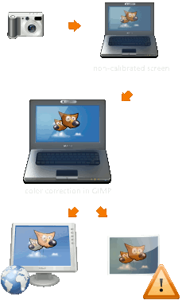
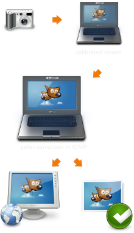

|

|
 |
| Capítulo 10. Melhorando fotografias |

|
Capítulo 12. Enriqueça meu GIMP |
Índice
Muitos dispositivos que você usa em seu projeto ou fluxo de trabalho de fotografia, como câmeras de fotografia digital, scanners, monitores, impressoras, etc, tem suas características próprias de reprodução de cor. Se estas não forem levadas em conta durante a abertura, edição e gravação de imagens, os ajustes feito podem ser prejudiciais para as mesmas. Com o GIMP você pode ter resultados confiáveis para Web e impressão.
Figura 11.1. Fluxo de processamento de imagens

Fluxo de trabalho sem gerenciamento de Cores

Processamento com gerenciamento de cores
O problema básico de manipulação de imagem, sem gerenciamento de cores é que você simplesmente não vê o que você faz. Isso afeta duas áreas distintas:
Há diferenças nas cores, causadas pelas características de cor diferentes de diferentes dispositivos, como câmeras, scanners, monitores ou impressoras
Existem diferenças de cores causadas pelas limitações de espaço de cores com que um dispositivo específico é capaz de lidar
O principal objetivo do gerenciamento de cores é para evitar tais problemas. A abordagem seguida para fazer isso implica na adição de uma descrição das características de cor de uma imagem ou dispositivos.
Estas descrições são chamados de perfis de cor. Um perfil de cor é, basicamente, uma tabela de consulta para converter a característica de cor específica de um dispositivo para um espaço de cor independente do dispositivo - o chamado “espaço de trabalho”. Toda a manipulação de imagens então, é feita em imagens no espaço de trabalho. Além disso o perfil de cor de um dispositivo (impressora, monitor, etc...) pode ser utilizado para simular a forma como as cores ficariam naquele dispositivo.
A criação de perfis de cor é mais frequentemente feita pelo fabricante dos próprios aparelhos. Para tornar esses perfis utilizáveis, independente do sistema operacional e da plataforma, o ICC (International Color Consortium) criou um padrão chamado de perfil ICC que descreve como os perfis de cores são armazenados em arquivos e incorporados em imagens.
| Dica | |
|---|---|
|
A maioria dos parâmetros e perfis descritos aqui podem ser definidos nas preferências do GIMP. Consulte Seção 6.4, “Gerenciamento de camadas” para maiores detalhes. |
A maioria das câmeras digitais incorporam um perfil de cores para arquivos de fotos sem nenhuma interação do usuário. Scanners digitais geralmente vêm com um perfil de cor, que eles também atribuem às imagens digitalizadas.
Ao abrir uma imagem com um perfil de cor incorporado, o GIMP oferece-se para converter o arquivo para o espaço de cor RGB de trabalho. Este perfil por padrão é o “sRGB” e recomenda-se que todo o trabalho seja feito em nesse espaço de cor. Se, porém, você decidir manter o perfil de cor incorporado na imagem, mesmo assim ela ainda será exibida corretamente.
No caso, se por algum motivo um perfil de cor não esteja incorporado na imagem e você sabe (ou tem um bom palpite) qual ele deveria ser, você pode atribuí-lo manualmente para essa imagem.
Para obter os melhores resultados, você precisa de um perfil de cor para o monitor. Se um perfil de monitor for configurado, ou para todo o sistema ou na seção de Gerenciamento de Cores do diálogo Preferências do GIMP, as cores da imagem serão exibidas de forma mais precisa.
Um dos comandos mais importantes do GIMP para trabalhar com gerenciamento de cores é descrito em Seção 5.12, “Filtros para a tela”.
Se você não tem um perfil de cor para o seu monitor, você pode criá-lo usando a calibração de hardware e ferramentas de medição. Em sistemas UNIX você terá o ColorHug™ (http://www.hughski.com/), Argyll Color Management System™[ARGYLLCMS] ou LProf™[LPROF] para criar perfis de cor.
Para telas existem dois passos envolvidos. Uma é chamada a calibração e o outro é chamado de criação do perfil. Além disso, a calibração envolve geralmente duas etapas. A primeira envolve o ajuste controles externos do monitor externos, como contraste, brilho, temperatura de cor, etc, e é altamente dependente do monitor específico. Além disso, existem outros ajustes que são carregados na memória da placa de vídeo para deixar o monitor tão perto de um estado padrão quanto seja possível. Esta informação é armazenada no perfil do monitor na tag chamada “vgct”. Provavelmente sob o Windows ou Mac OS, o sistema operacional carrega esta informação (LUT) na placa de vídeo no processo de iniciar o computador. No Linux, no momento, você tem que que usar um programa externo, como o xcalib ou dispwin. (Se você vai fazer uma calibração visual simples usando um site como o de Norman Koren, é possível usar apenas o xgamma para carregar um valor de gama.)
O segundo passo, de criação de perfil, deriva um conjunto de regras que possibilitam aoGIMP traduzir os valores RGB no arquivo de imagem em cores adequadas na tela. Isso também é armazenado no perfil do monitor, e não altera os valores RGB na imagem, mas muda quais valores são enviados para a placa de vídeo (que já contém o LUT vgct).
Usando o GIMP você pode facilmente obter uma prévia de como sua imagem será no papel. Dado um perfil de cores para a impressora, a wexibição do GIMP pode ser ligada em modo de prova eletrônica. Em tal impressão simulada, cores que não podem ser reproduzidas adequadamente, podem opcionalmente ser marcadas com uma cor cinza neutra, permitindo-lhe corrigir esses erros antes de enviar suas imagens para a impressora.